du massif →
identité de marque
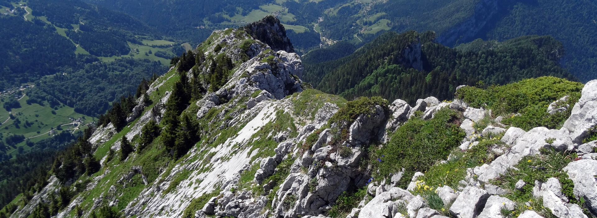
Le Grand Som — Chartreuse, IsèreUn gin et un pastis nés d’une montagne. Les plantes sauvages du Grand Som — sapin, genèvre, sureau, coriandre — sont à la fois les ingrédients et l’âme de chaque bouteille.
Deux spiritueux,
un seul territoire.
L’identité visuelle ancre chaque produit dans son univers propre — la forêt nocturne du gin, la lumière estivale du pastis — tout en gardant la montagne comme fil conducteur.
Une bouteille pour chaque saison
Piste abandonnéeAvant d’arrêter la direction finale, une piste a été explorée : décliner l’étiquette du gin selon les saisons — chaque époque ses plantes, ses couleurs, son caractère. L’idée faisait sens avec l’ancrage dans le territoire vivant du Grand Som, où la cueillette suit le rythme de la montagne.
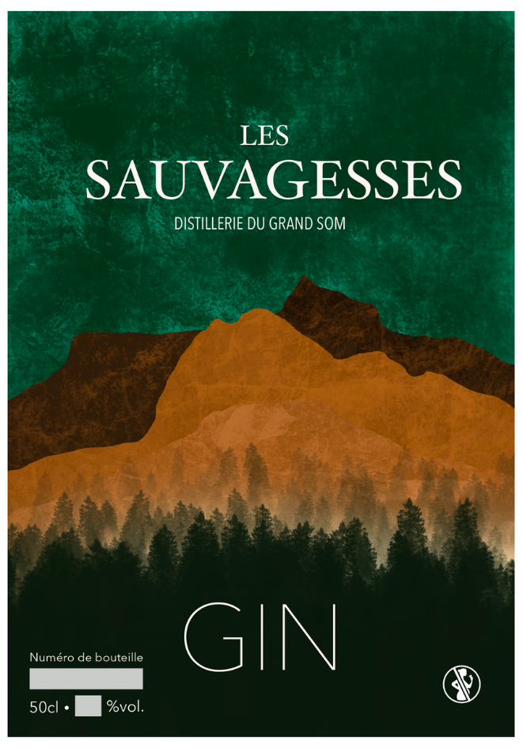
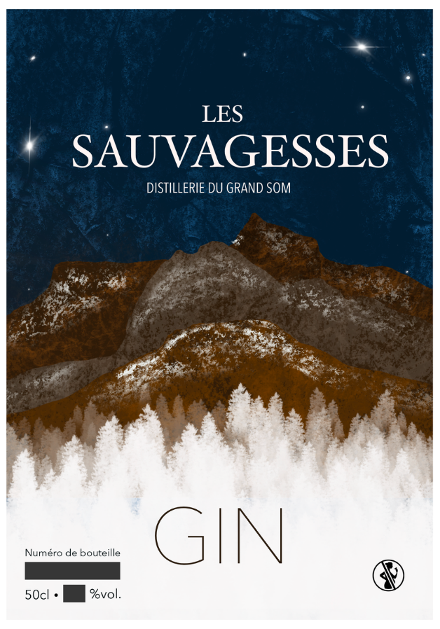
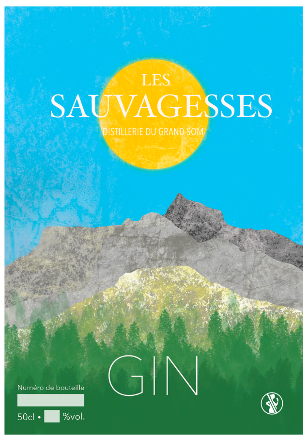
Les plantes du Grand Som ne sont pas seulement des ingrédients — elles sont l’identité. Chaque espèce cueillie sur le massif raconte une région, une saison, un caractère.
Le Gin des Sauvagesses
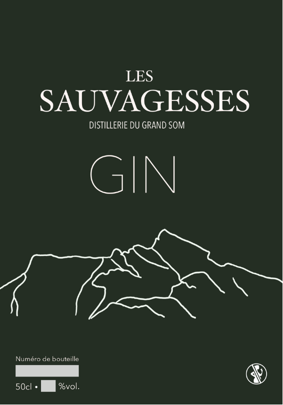
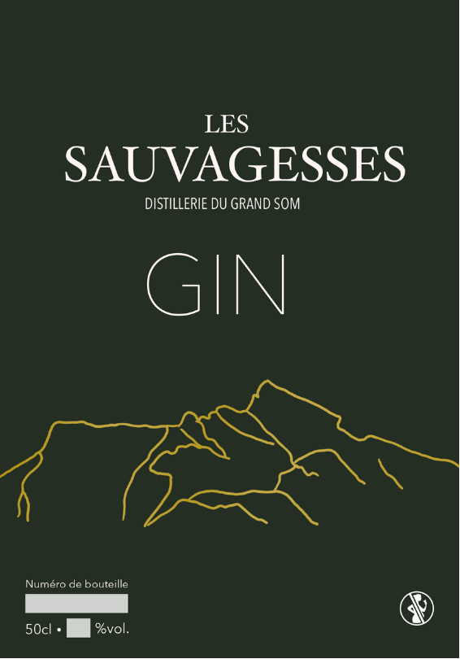
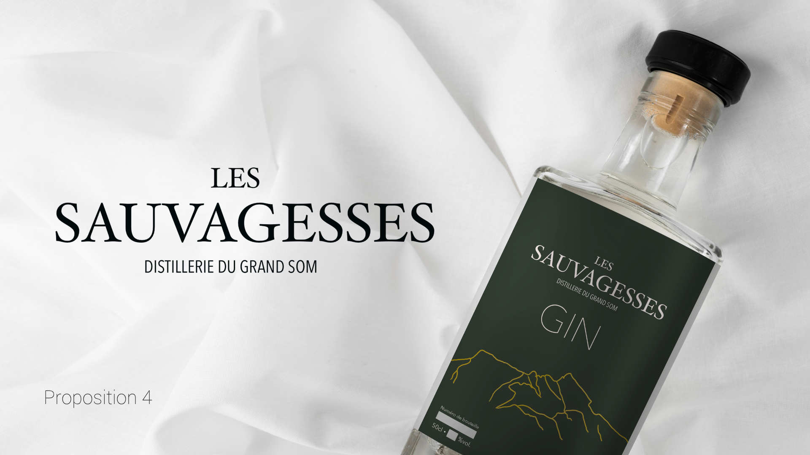
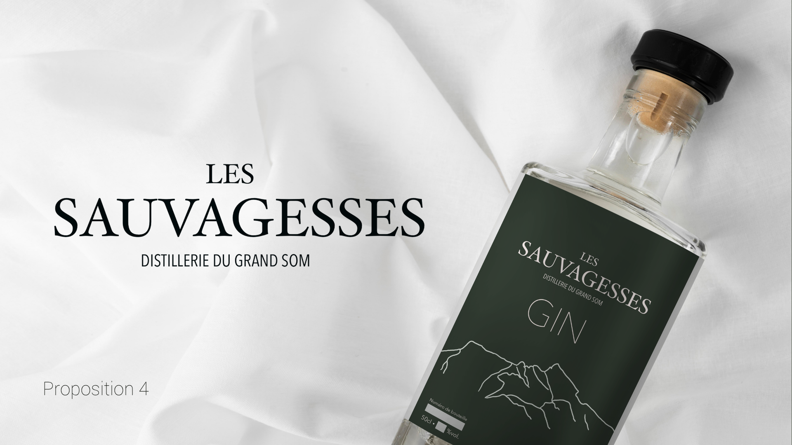
Le Pastis des Sauvagesses
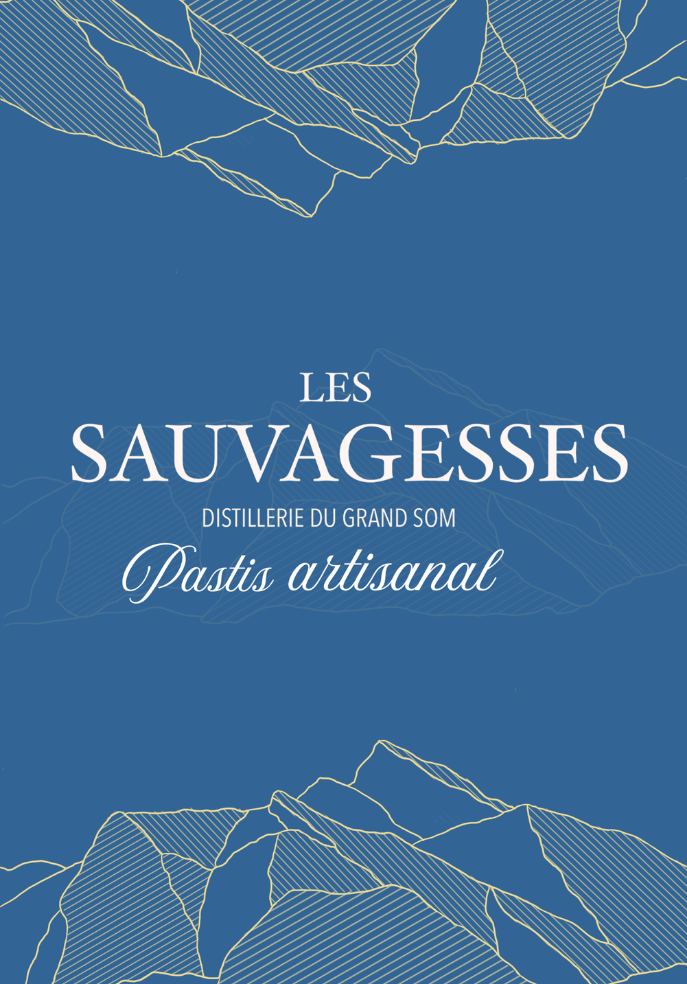
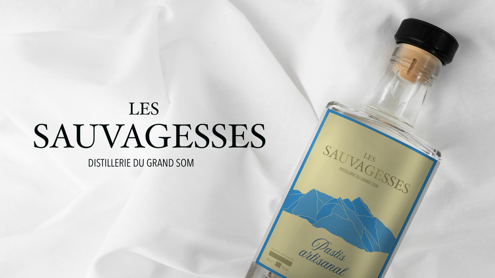
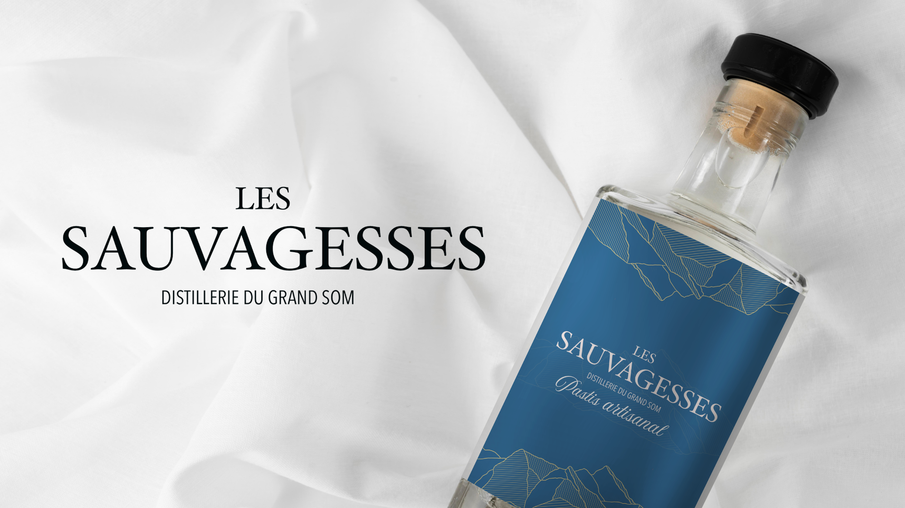